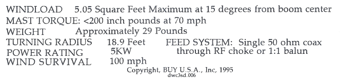

For my Force-12 C3S I “try” to orient the beam so the element ends are pointing into the wind. Difficult to do with the winds here in the Los Gatos Gulch. They are a little variable making it difficult to get exactly element-end-on.
Because from the antenna manual the maximum wind load is with the beam pointing 15 degrees either side of end-on boom alignment:

73,
Bob – W6OPO
From: Chat1 [mailto:chat1-bounces@ncdxc.org] On Behalf Of Richard Courtway via Chat
Sent: Tuesday, December 09, 2014 9:27 AM
To: chat@ncdxc.org
Subject: [NCDXC Chat] Beaming into the wind ??
good Morning
This morning was asked how to aim a beam antenna when face with high winds. Boom aligned with the wind direction - or the elements ??
I am using the Bencher Skyhawk and always align the boom with the wind when finished being on the air.
Right , wrong - or wot ??
de Dick / N7RC
_______________________________________________
Chat mailing list
Chat@ncdxc.org
http://mail.ncdxc.org/mailman/listinfo/chat_ncdxc.org
Message delivered to jamesnoland42@gmail.com